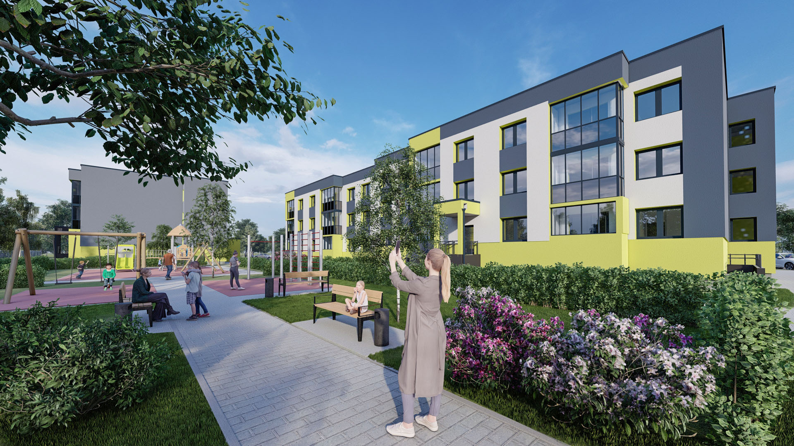
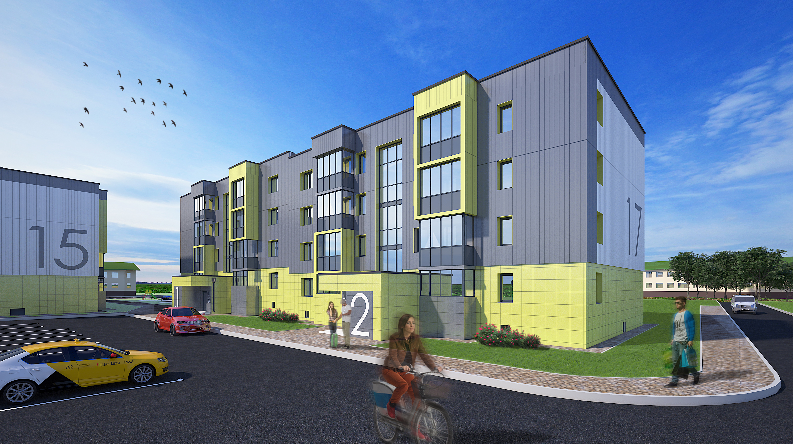
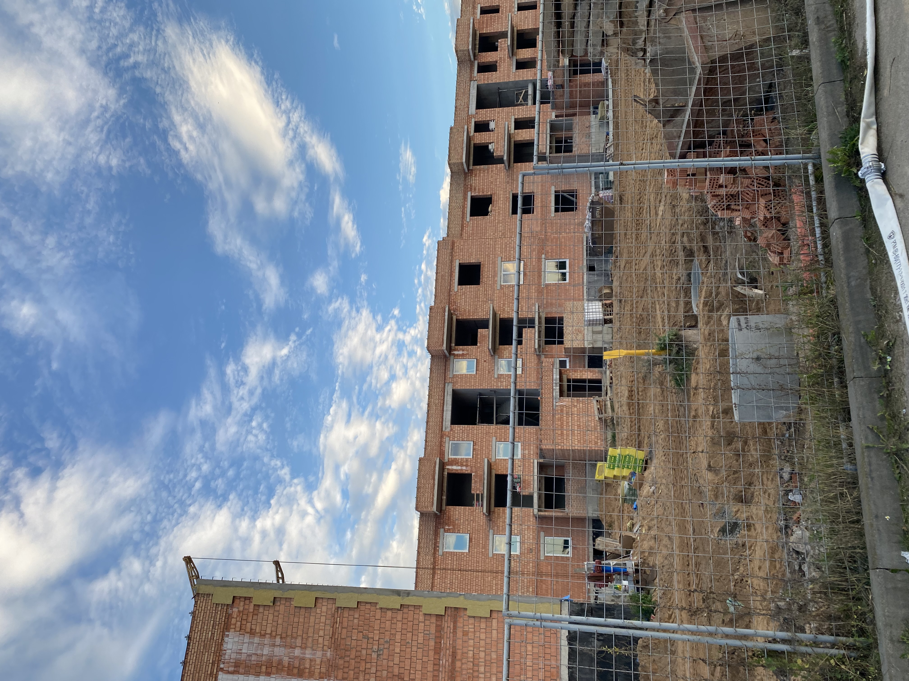
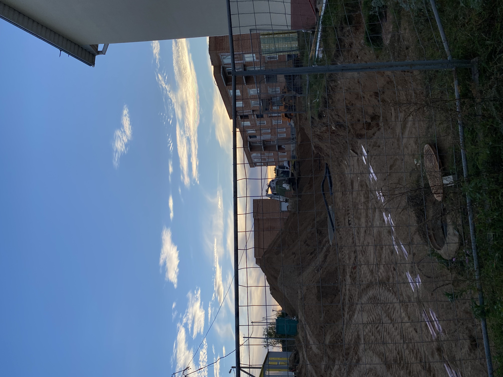
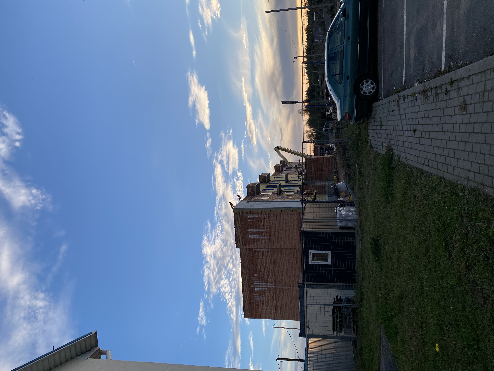
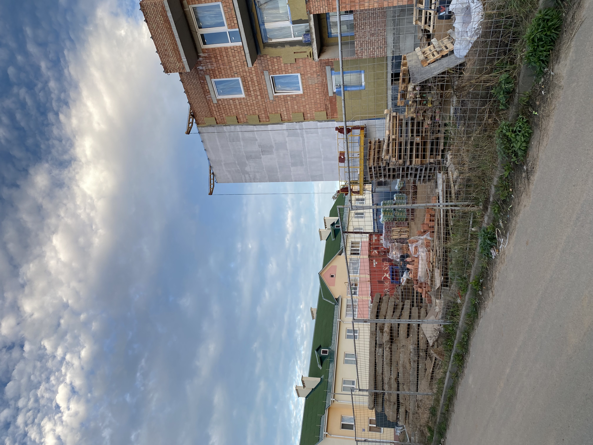
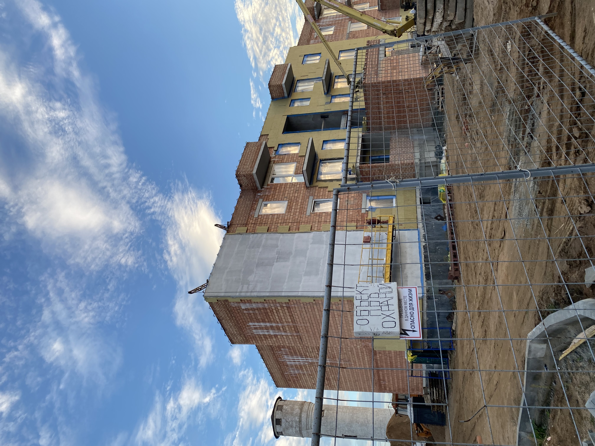
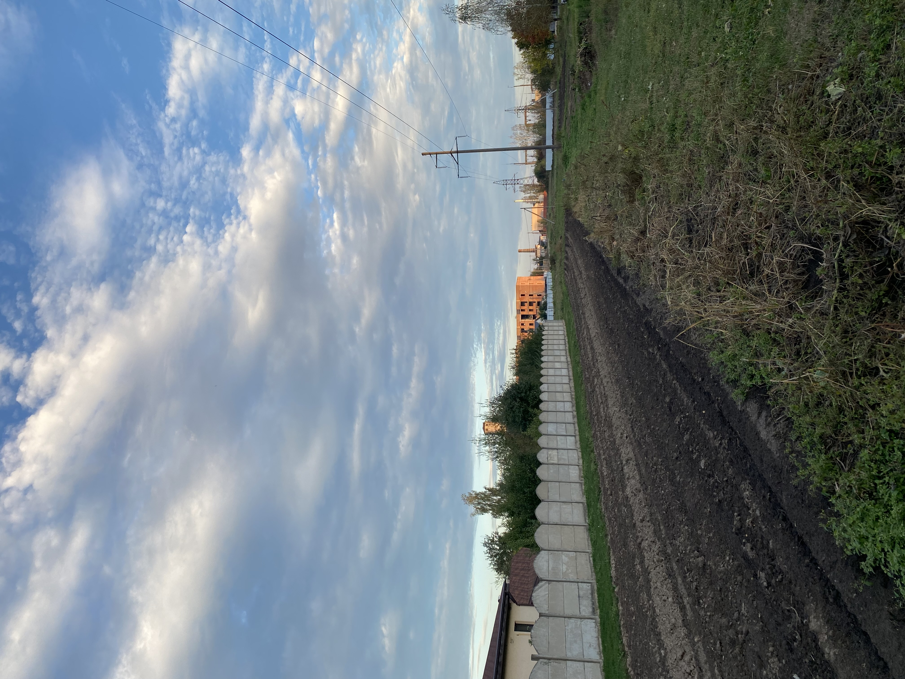

<html>
    <head>
        <title>Новости</title>
        <meta http-equiv="content-type" content="text/html" charset="UTF-8">
         <!--Стиль для обтекания текста-->
    <style>
        .left{
            float: left;
            margin: 7px, 7px, 7px, 0px;
        }
        .right{
            float: right;
            margin: 7px, 7px, 7px, 0px;
        }
    </style>
    <!--Задний фон-->
    <style>
        body {
          background: url('фон.avif');
          background-repeat: repeat;
          background-size: cover;
        }
        </style>
       <!--Расположение текста по центру-->
 <style>
 .text-center {
    text-align: center;
    
  }
  </style>
  <!--Картинки по цетру с подписью-->
<style>
    .pic {
     display: block; 
     text-align: center; /* Выравнивание по центру */
     font-style: italic; /* Курсивное начертание */
     margin-top: 0; /* Отступ сверху */
     margin-bottom: 5px; /* Отступ снизу */
     color: #666; /* Цвет подрисуночной подписи */
    }
   </style>

    </head>
</html>

<body class="body">
    <h1 class="text-center">Новости</h1>
    <h2>Жилой комплекс "Луговая Слобода"</h2>
    <hr>
    <p>
        <h3>Образ от застройщика</h3>
        <figure class="pic">  
             
       
            <figcaption>
              ЖК "Луговая Слобода"
            </figcaption>
          </figure>
        ООО «Металлстройпрофиль» совместно с «УКС Минского района» застраивает квартал новой малоэтажной застройки.
        <br>Комплекс сформируют два 3-этажных дома с благоустроенными дворами, автопарковками и детскими площадками.
        <br>Жилой дом состоит из 2 секций в 3 этажа. Наружные стены выполнены из керамического блока, внутренние стены – из кирпича, блоков ячеистых. Конструктивная схема - каркасно-стеновая, с несущими стенами и внутренними монолитными ж/б колоннами. Фасад дома - вентилируемый с облицовкой из керамогранита в пределах 1-го этажа и из линеарных панелей в пределах 2-3 этажей.
        <br>Квартиры в доме представлены в различных вариантах. Всего в доме запроектировано 35 квартир, в том числе 11 студий-квартир, 15 однокомнатных, 6 двухкомнатных, 3 трехкомнатных. Также в доме предусмотрено встроенное помещение, относящееся к объектам социальной инфраструктуры. На окнах— двухкамерные стеклопакеты.
        <br>
    </p>
    <h2>Как ЖК выглядит на данный момент?</h2>
    <figure2 class="pic">  
       
       
       
       
       
       
      <figcaption2>
        <br>ЖК "Луговая Слобода" моими глазами
      </figcaption2>
    </figure2>
</body>